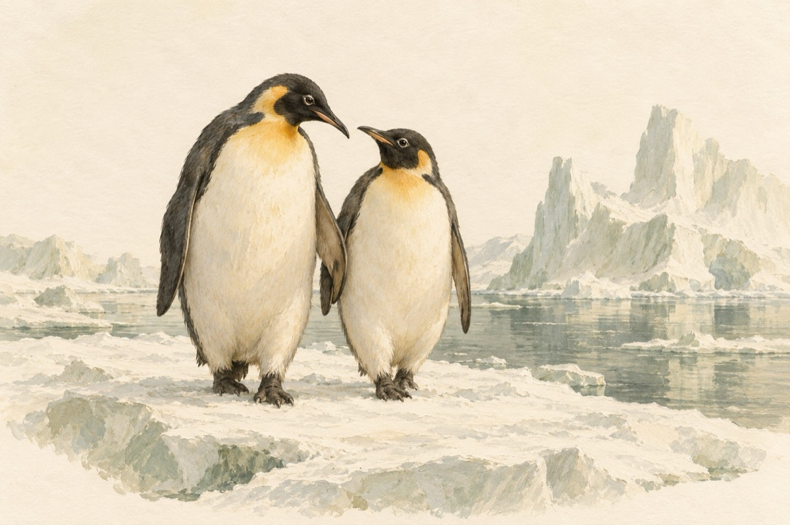

Pinguinii
Perechi, perechi umblă nedespărțiți
Printre ghetari
cu puii la picioare Când geru-i năvălește stau strâns uniți,
Și luptă cu natura-nvingătoare.
Plecați în luna de miere
Pe o insulă străină
Cum lor inima le-o cere
Au pornit luați de mână
Pinguin și pinguină.
Vor schimba vreo doi ghețari
Și un lac neînghețat
Unde nu sunt crocodili
Nici obraznicii țânțari
Pe-un ghețar ca un palat.
Acesta e locul ales
Unde cei îndrăgostiți
Vin aicea foarte des
Și sunt tare fericiți.
Vasile Groza